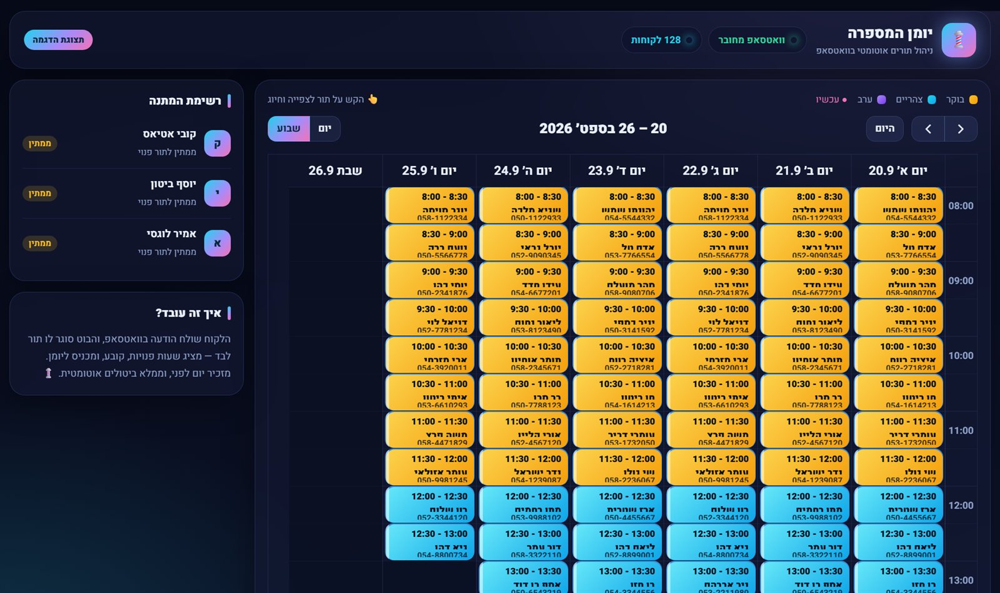

היומן מתמלא לבד
גם באמצע תספורת
הלקוחות שולחים הודעה לוואטסאפ של המספרה, והבוט מציע שעות פנויות, קובע את התור ומכניס אותו ליומן. בלי טלפונים באמצע עבודה, בלי "אחזור אליך" ובלי תורים שנשכחים.
- עונה ללקוחות 24/7
- תזכורת אוטומטית יום לפני
- בלי אפליקציה ללקוחות

הידיים שלך בשיער. הבוט בוואטסאפ.
ספר עובד עם הידיים — ובדיוק אז הטלפון לא מפסיק לזמזם. לקוח שלא קיבל תשובה תוך כמה דקות קובע במקום אחר, לקוח ששכח את התור משאיר חור ביומן, וכל ביטול של הרגע האחרון זה כסף שהולך לאיבוד. הבוט עושה את כל העבודה הזאת בשבילך, ואתה רואה הכל ביומן אחד מסודר.
שלושה צעדים, אפס טלפונים
הלקוח שולח הודעה
לוואטסאפ הרגיל של המספרה — אותו מספר שהלקוחות כבר מכירים. בלי אפליקציה ובלי הרשמה.
הבוט קובע תור
מציע ימים ושעות פנויות לפי שעות הפעילות שלך, מאשר את התור ושולח תזכורת יום לפני.
אתה רואה הכל ביומן
כל תור נכנס ליומן בזמן אמת, עם שם הלקוח וכפתור חיוג. אפשר להוסיף, לבטל ולחסום זמנים — מהטלפון.
שיחה אחת, תור ביומן
הלקוח בוחר מספרים מתפריט פשוט, והבוט עושה את השאר — כולל בדיקה שהשעה עדיין פנויה ברגע האישור.
כל מה שצריך כדי שאף תור לא ילך לאיבוד
קביעת תור בוואטסאפ
הבוט מציע רק שעות פנויות באמת, ומונע שני לקוחות על אותה שעה.
תזכורות אוטומטיות
כל לקוח מקבל תזכורת יום לפני התור — הרבה פחות "שכחתי".
רשימת המתנה חכמה
תור שהתבטל מוצע מיד למי שמחכה לאותו יום. החור ביומן נסגר לבד.
יומן ניהול
תצוגת יום ושבוע, הוספה וביטול ידני, חסימת הפסקות — מהמחשב או מהנייד.
שבתות וחגים
שעות מקוצרות בשישי ובערבי חג, וסגור בשבת ובחגים — מזוהה אוטומטית.
סגירת יום בלחיצה
מחלה או חירום? לחיצה אחת, וכל לקוחות היום מקבלים הודעת ביטול מסודרת.
חיוג מהיומן
ליד כל תור מופיע מספר הטלפון של הלקוח, ללחיצה אחת כשצריך לדבר.
עברית מלאה
הבוט, היומן וכל ההודעות — בעברית טבעית, בטון של מספרה ולא של מוקד.
בוחרים כמה רחוק לקחת את זה
כל החבילות כוללות את בוט התורים המלא. ההבדל הוא כמה לקוחות חדשים אנחנו מביאים אליו.
תור חכם
הבוט והיומן, מוכנים לעבודה
2,500 ₪
תשלום חד-פעמי · + 149 ₪ לחודש
- בוט וואטסאפ לקביעה, ביטול ובדיקת תורים 24/7
- יומן ניהול יומי ושבועי
- תזכורות ללקוחות יום לפני
- רשימת המתנה שממלאת ביטולים
- שעות פעילות, חגים וסגירת יום
- התקנה על שרת 24/7 + חיבור הוואטסאפ
- הדרכה אישית + חודש תמיכה
מספרה דיגיטלית
הבוט + נוכחות מלאה ברשת
3,200 ₪
תשלום חד-פעמי · + 149 ₪ לחודש
- כל מה שבחבילת "תור חכם"
- אתר תדמית למספרה, מותאם לנייד
- גלריית תספורות, מחירון, מפה וביקורות
- כפתור "קבע תור" שמוביל ישר לבוט
- פרופיל עסק בגוגל מלא ומותאם
- קידום אורגני בסיסי לחיפושים מקומיים
- 3 חודשי תמיכה
מספרה בצמיחה
מביאים לקוחות חדשים ליומן
4,000 ₪
תשלום חד-פעמי · + 149 ₪ לחודש
- כל מה שבחבילת "מספרה דיגיטלית"
- הקמת קמפיין בפייסבוק ובאינסטגרם
- פיקסל, קהלים ומודעות שמובילות לבוט
- חודש ראשון של ניהול ואופטימיזציה
- 8 פוסטים + 8 סטוריז ממותגים לאינסטגרם
- דוח ביצועים בסוף החודש
149 ₪ לחודש מכסים שרת שפועל 24/7, תחזוקה ותמיכה. תקציב הפרסום בחבילת "מספרה בצמיחה" משולם ישירות למטא ואינו כלול במחיר.
כל מה שרציתם לדעת
איך מתחילים?
הלקוחות צריכים להוריד אפליקציה?
זה עובד על המספר הקיים שלי?
מה קורה כשלקוח מבטל?
אני חולה או שיש מקרה חירום — מה עושים?
אפשר לקבוע תור ידנית, למשל ללקוח שהתקשר?
למה יש תשלום חודשי?
אפשר לשדרג חבילה אחר כך?
רוצה יומן שמתמלא לבד?
ספר לי קצת על המספרה — ותקבל הסבר קצר והדגמה חיה עוד היום.